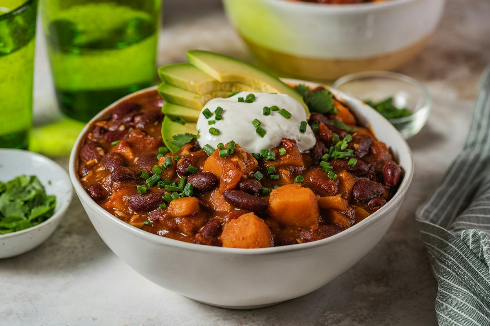

Two-Pot Chili (Turkey and Lentil)
The same spices, tomatoes, and beans in two pots: ground turkey in one, lentils and extra beans in the other. The vegetarian pot is dairy-free with no bell pepper.

Representative photo by Svitlana on Unsplash
Serves 4 servings
Prep
Cook
Total
Ingredients
Base, split between pots
- 2 tbsp oil
- 1 large onion, diced
- 4 cloves garlic, minced
- 3 tbsp chili powder
- 1 tbsp ground cumin
- 1 tsp smoked paprika
- 1 tsp dried oregano
- 1 tsp salt
- 1 can (28 oz) crushed tomatoes
- 1 can (15 oz) kidney beans, drained
- 1 can (15 oz) black beans, drained
- 2 cups vegetable broth
Meat pot
- 1 lb ground turkey
- 1 bell pepper, diced (optional)
Vegetarian pot
- 2 carrots, diced
- 1 can (15 oz) pinto beans, drained
- 1 package (17.6 oz) steamed lentils
Toppings and salad
- 1 avocado
- 1 bunch cilantro
- 2 limes
- shredded cheese and sour cream (meat side only)
- 5 oz mixed greens
- 1 cucumber, sliced
- pepitas
- olive oil
Steps
- Heat 1 tbsp oil in each of two pots. Brown the turkey with half the onion and the bell pepper in one, 6 to 8 minutes. Sauté the rest of the onion with the carrots in the other, 5 minutes.
- Split the garlic, chili powder, cumin, paprika, oregano, and salt between the pots and stir for 1 minute.
- Split the tomatoes, kidney beans, black beans, and broth between the pots. Add the pinto beans to the vegetarian pot.
- Simmer both, partly covered, for 25 to 30 minutes.
- Stir the lentils into the vegetarian pot for the last 10 minutes.
- Toss the greens, cucumber, and pepitas with olive oil and lime juice.
- Taste both pots for salt. Serve with avocado, cilantro, and lime, with cheese and sour cream on the meat side only.
Both pots freeze well.